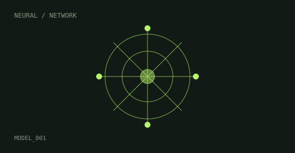
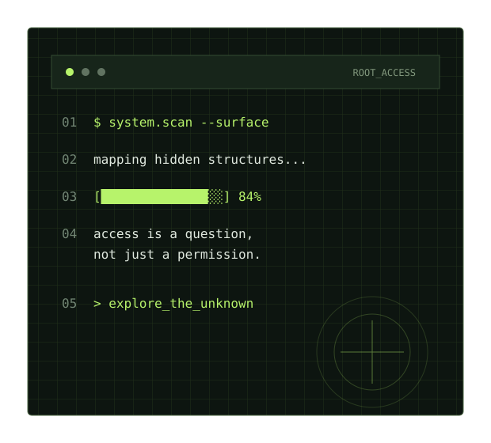
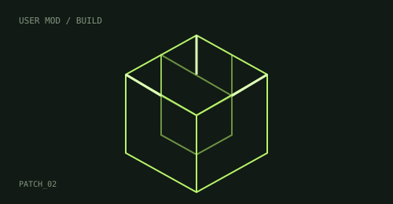
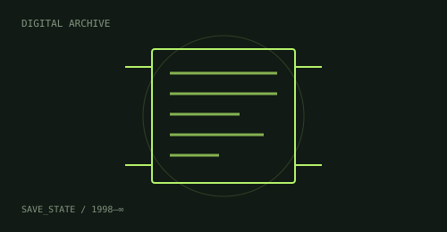

01MÁQUINAS QUE APRENDEN
Inteligencia artificial
De asistentes de código al análisis de sistemas complejos: nuevas herramientas para crear y comprender.
VER INVESTIGACIONESINVESTIGACIÓN // CULTURA DIGITAL
Exploramos lo que sucede cuando la inteligencia artificial, los videojuegos y la libertad digital se cruzan. Sin respuestas fáciles. Sin mirar hacia otro lado.

01 — PUNTO DE PARTIDA
La inteligencia artificial está cambiando la forma de crear, analizar y modificar software. En el universo de los videojuegos, estas herramientas abren posibilidades para experimentar, recuperar obras y comprender sistemas que antes parecían inaccesibles.
Pero cada avance también trae preguntas: ¿qué es legítimo modificar?, ¿qué pasa cuando un juego deja de funcionar?, ¿dónde termina la preservación y empieza la infracción? USER:ROOT investiga esas tensiones.
02 — ÁREAS DE EXPLORACIÓN
DESLIZÁ ENTRE DISCIPLINAS
Y CONECTÁ LOS PUNTOS.

01MÁQUINAS QUE APRENDEN
De asistentes de código al análisis de sistemas complejos: nuevas herramientas para crear y comprender.
VER INVESTIGACIONES
02CREAR SOBRE LO CREADO
Comunidades que amplían, transforman y mantienen vivos los videojuegos más allá de su versión original.
VER INVESTIGACIONES
03MEMORIA DIGITAL
Emulación, compatibilidad y archivos digitales: cómo conservar experiencias que dependen del software.
VER INVESTIGACIONESDERECHOS Y REGLAS
Piratería, propiedad intelectual e interoperabilidad: debates sobre acceso, control y responsabilidad.
VER INVESTIGACIONES03 — CUADERNO DE INVESTIGACIÓN
Una mirada a la asistencia automatizada para interpretar código, estructuras y comportamientos.
El modding como práctica creativa y como punto de fricción con las reglas de cada plataforma.
La preservación digital frente al cierre de servidores, la obsolescencia y las licencias.
Una conversación sobre acceso, propiedad, contexto y las distintas responsabilidades involucradas.
* Los títulos funcionan como líneas editoriales del proyecto y pueden ampliarse con fuentes, entrevistas y casos concretos.
04 — DECLARACIÓN DE PRINCIPIOS
USER:ROOT nace para mirar debajo de la interfaz. No busca glorificar la piratería ni demonizar la innovación: propone investigar, distinguir contextos y pensar críticamente quién controla las herramientas, las obras y el conocimiento.
CURIOSIDAD COMO MÉTODO. CRITERIO COMO BRÚJULA.
01 cuestionar_por_defecto();
02 investigar_con_contexto();
03 preservar_lo_que_importa();
04 compartir_con_responsabilidad();
> sistema listo_